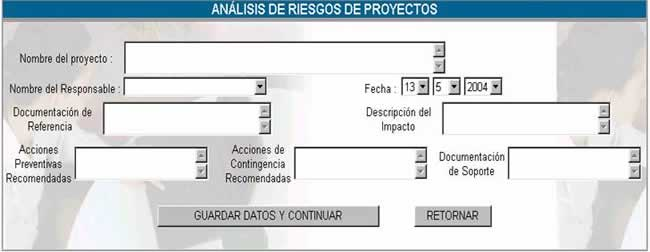

ANÁLISIS DE RIESGOS
Esta opción permite realizar el análisis de
riesgos que pueden afectar al proyecto, la pantalla principal se muestra a
continuación
Donde:
Nro de Form: se refiere al número de formulario que se asigna
correlativamente cada análisis de riesgo que se hace para cada proyecto.
Nombre del proyecto; se refiere al nombre del proyecto al cual el riesgo
puede afectar
Documentación de referencia; se refiere a la documentación de referencia que se
utilizó para realizar el análisis de riesgos
Fecha; hace referencia a la fecha en la cual se realizó dicho análisis.
Imprimir; genera un reporte del Análisis de Riesgos para su
impresión.
Nuevo Formulario; cuando
usted hace click en este botón aparecerá la pantalla
siguiente:

Nombre del proyecto; en este
campo se especifica el nombre del proyecto del cual se está realizando el
análisis de riesgos
Nombre del responsable; se
puede asignar esta tarea a uno de los usuario.
Documentación de
referencia; se refiere a la
documentación en la cual se basa para realizar el análisis de riegos,
dependiendo de los códigos que establezca el manual de procedimientos.
Documentación de soporte; se refiere a la documentación que ayuda de alguna
forma a realizar el análisis de riesgos.
Descripción del impacto; se
debe hacer una descripción detallada de lo posibles daños que se tenga en caso
de que se materialice la amenaza, también tomando en cuenta la probabilidad de
ocurrencia del riesgo.
Acciones preventivas
recomendadas; se refiere a las
acciones recomendadas por el especialista para que el riesgo no tenga impacto y
no existan consecuencias.
Acciones de contingencia recomendadas; se
refiere a las acciones que deben tomarse en caso de que el riesgo tenga curso,
estas pueden ser determinadas con anterioridad.
Una vez que usted presione sobre el botón GUARDAR Y CONTINUAR aparecerá la
siguiente pantalla.

Como puede observar en la parte superior de
la tabla aparece especificado el nombre del proyecto
Nro. Este
campo se refiere al número de riesgo que puede ocurrir
Probabilidad: Es un índice del 0 al 1 y determina cuán probable es
que un riesgo se materialice, mientras más cerca esté de 1 entonces se debe
tomar acciones preventivas.
Impacto: Describe
que es lo que puede ocurrir si es que el riego ocurre.
Una vez que usted haya registrado estos
datos, presione el botón INSERTAR DATOS y luego presione el botón
TERMINAR, y aparecerá la lista de análisis de riesgos.